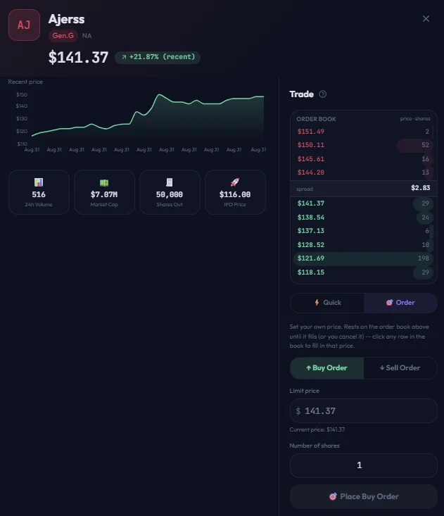
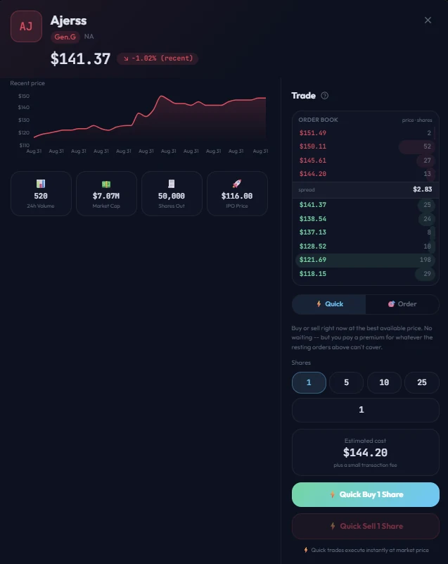

Forecast is a fantasy stock market for competitive Fortnite. Professional players are represented as tradeable securities, with prices determined through a live order book and dividends tied to tournament performance. The platform is designed to give users who closely follow the competitive scene a market in which that knowledge can inform trading decisions.
The Idea
Professional Fortnite players are introduced to the market through an auction and subsequently trade through a live order book. When a player performs well in a tournament, a portion of the relevant prize pool is distributed to shareholders as a dividend. Uninvested cash is held in a treasury instrument and earns yield.
The objective was to create a market in which competitive knowledge could provide a meaningful trading advantage, which required the underlying mechanics to reflect real market principles: prices determined by supply and demand, explicitly provided liquidity, and exact settlement of all transactions and distributions.
How It Works
Trading runs on a real order book with two order types.
Settlement
Dividends and auction proceeds are distributed using an exact largest-remainder (Hamilton) apportionment method. This ensures that the full distribution pool is allocated across shareholders without introducing rounding discrepancies, while preserving exact cash and share conservation.
Liquidity
A market without resting orders cannot provide meaningful liquidity. Forecast uses a population of automated participants with distinct trading strategies to maintain order-book liquidity and provide counterparties for human traders. These participants submit orders through the same execution path available to human users and do not receive privileged access.
Testing the Rules
Before introducing the market to users, I simulated repeated trading cycles with populations of automated participants to identify failures in the economic and trading rules, including runaway inflation, poorly calibrated dividends, and fee structures that reduced liquidity. The current fee structure, dividend parameters, and treasury rate were selected based on those simulations rather than arbitrary assumptions.
Where This Stands
Forecast is under active development. The order book, auction and dividend settlement systems, and trading interface have been implemented and tested end-to-end against the live database and cache infrastructure. A live demonstration is available above.

Limit Order mode — specify a price and allow the order to remain in the book until matched.

Quick Trade mode — immediate execution against available liquidity, with the estimated execution premium shown before submission.
Design Lessons
Technologies